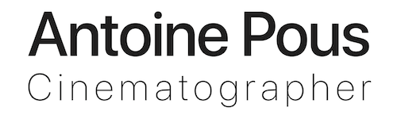

- electrician on COMMENT FAIRE DU TRAVIS SCOTT - LA RECETTE HORS-SÉRIE - MASKEY (music video / dir. Hani Azzoug & Maskey / DP Pierre Brunet)
- electrician on BAD BUZZ - LENNI-KIM (music video / dir. Lenni Kim & Andrea Lo / DP Théo Gottlieb / prod. HK CORP)
- electrician on POLAR SYSTEM - RAY REMIX (music video / dir. Anne-Claire Desbenoit / DP Florian Solin / Prod. )
- cinematographer & colorist on TOUTE LA SEMAINE - FAYE (music video / dir. Luis Letailleur / prod. COFEEL PRODUCTION)
- electrician on SPÉCIAL - LEFA FT. DOSSEH (music video / dir. Arnaud Vieron et Jérémy Beaudet / DP Théo Gottlieb / prod. HK CORP)
- cinematographer & colorist on ESSENCE (short film / dir. Luis Letailleur)
- electrician on JEAN PAUL GAULTIER - SO SCANDAL ROUGE (commercial / dir. Romaric Baudoin / DP Florent Stramboli / prod. Cuuut)
- electrician on ADIDAS ULTRABOOST 20 (commercial / dir. THE THING ALIVE / DP Mathieux Andrieux / prod. WHEN WE WERE KIDS)
- electrician on NINA RICCI - NINA ROSE (commercial / DP Florent Stramboli / prod. Cuuut)
- gaffer on VIVIANE ET LE LUTIN DE NOËL (short film / dir. Valentin Jean & Jenny Letellier / DP Nicolaos Zafiriou / prod. Le monde à l'envers)
- electrician on DREEM (commercial / dir. Léo Sattin / DP Théo Gottlieb / prod. BANDE MAGNETIQUE)
- electrician on I COULD (music video / dir. Hugo Planchais / DP Julien Artaud / prod. Supervision Creative)
- electrician on JE SUIS TON PÈRE (short film / dir. Justine Le Pottier / DP David Tabourier / prod. STUPEFY PRODUCTIONS)
- electrician on DANNY (short film / dir. Michel Biel / DP Hugo Poisson / prod. AS&M)
- electrician on ET ILS DANSÈRENT (short film / dir. Margot Pouppeville / DP Nicolaos Zafiriou)
- cinematographer on EMASCULATED by Julius Spellman (music video / dir. Grégoire Serres / prod. COFEEL PRODUCTION)
- electrician on PALME (short film / dir. Mathilde Aplincourt / DP Nicolaos Zafiriou / prod. Mil Sabord)
- camera trainee on ADIEU LES CONS (feature film / dir. Albert Dupontel / DP Alexis Kavyrchine / prod. ADCB)
- gaffer on ODE (short film / dir. Imène Benlachtar / DP Luis Letailleur / prod. Falcon Keys)
- cinematographer & colorist on ANGER (short film / dir. Luis Letailleur)
- cinematographer & colorist on AU LOIN DE PRÈS by Sören Kada (music video / dir. Luis Letailleur / prod. Falcon Keys)
- colorist on REPAS DU DIMANCHE (short film / dir. Noémie Parreaux)
- electrician on RAVE and NUIT NOIRE by Hyacinthe (music video / dir. Raphaël Neal / DP Nicolaos Zafiriou)
- cinematographer on AFTERPARTY by Dharma Bum (music video / dir. Grégoire Serres / prod. COFEEL PRODUCTION)
- internship at NEXTSHOT (4 weeks)
- cinematographer & colorist on TOXIC (short film / dir. Luis Letailleur) Winner at Tous en short film festival in Cannes
in 2019 (Best movie, best acting and best editing)
- second Assistant Camera on CHAT SOURIS by Feu! Chatterton (music video / dir. Julia Tarissan & Juliet Casella / DP James Coote / prod. Les Mauvaises Filles)
- cinematographer & colorist on DODO by Faye (music video / dir. Luis Letailleur)
- internship at France 3 in camera departement (4 weeks)
- cinematographer on MEMENTO MAURICE (short film / dir. Théodore Julia)
- cinematographer & Colorist on REVERIE (short film / dir. Luis Letailleur)
- colorist on 3 prevention films for the Rouen Normandie Metropolis (dir. Grégoire Serres / prod. COFEEL PRODUCTION).
- cinematographer on PHOENIX (short film / dir. Luis Letailleur) Winner at Tous en short film festival in Cannes
in 2018 (Best movie, best acting, best editing & best directing)
- cinematographer on TU FAIS CHIER by The Eggz Band (music video).
- cinematographer on a teaser for the theatre company Echo
- cinematographer & colorist on STRAIGHT AHEAD by Rebellion of the loom (music video / dir. Luis Letailleur).